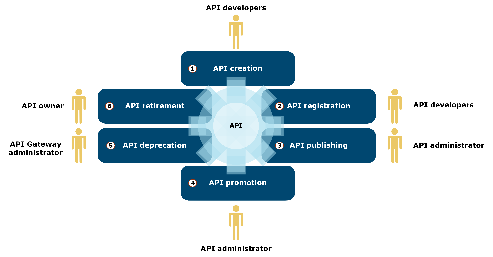
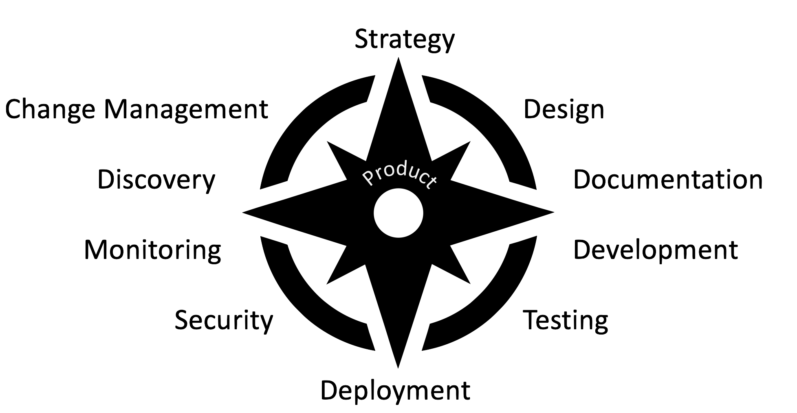
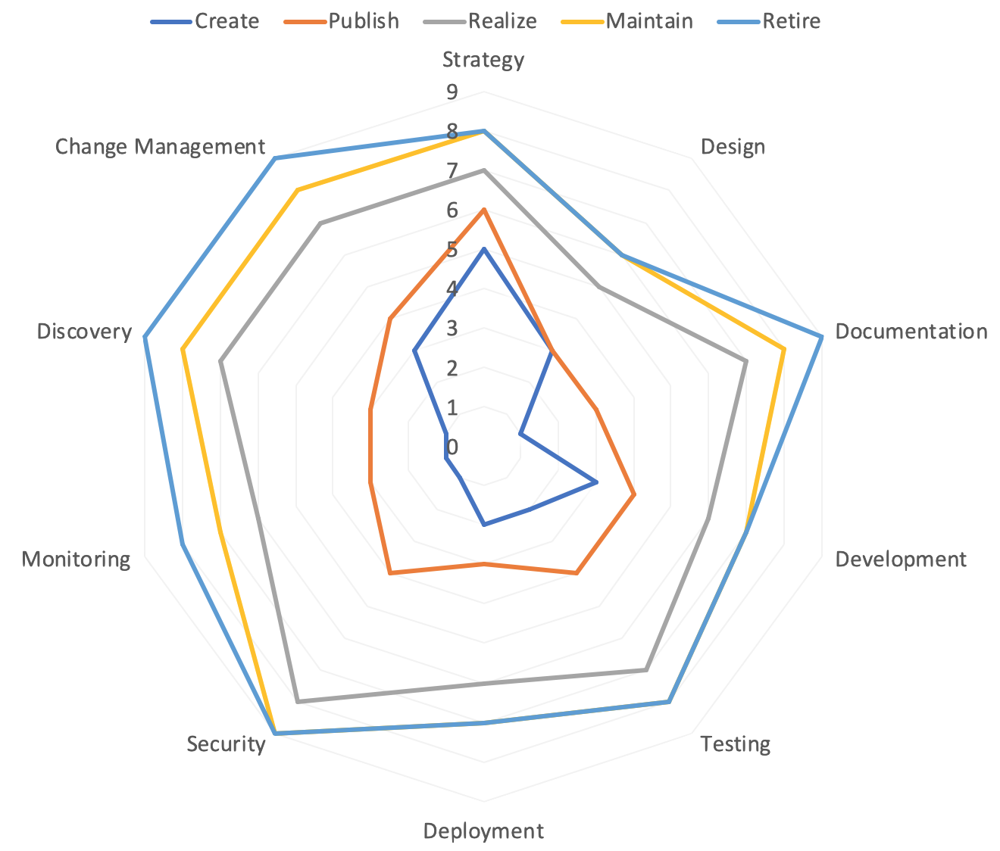
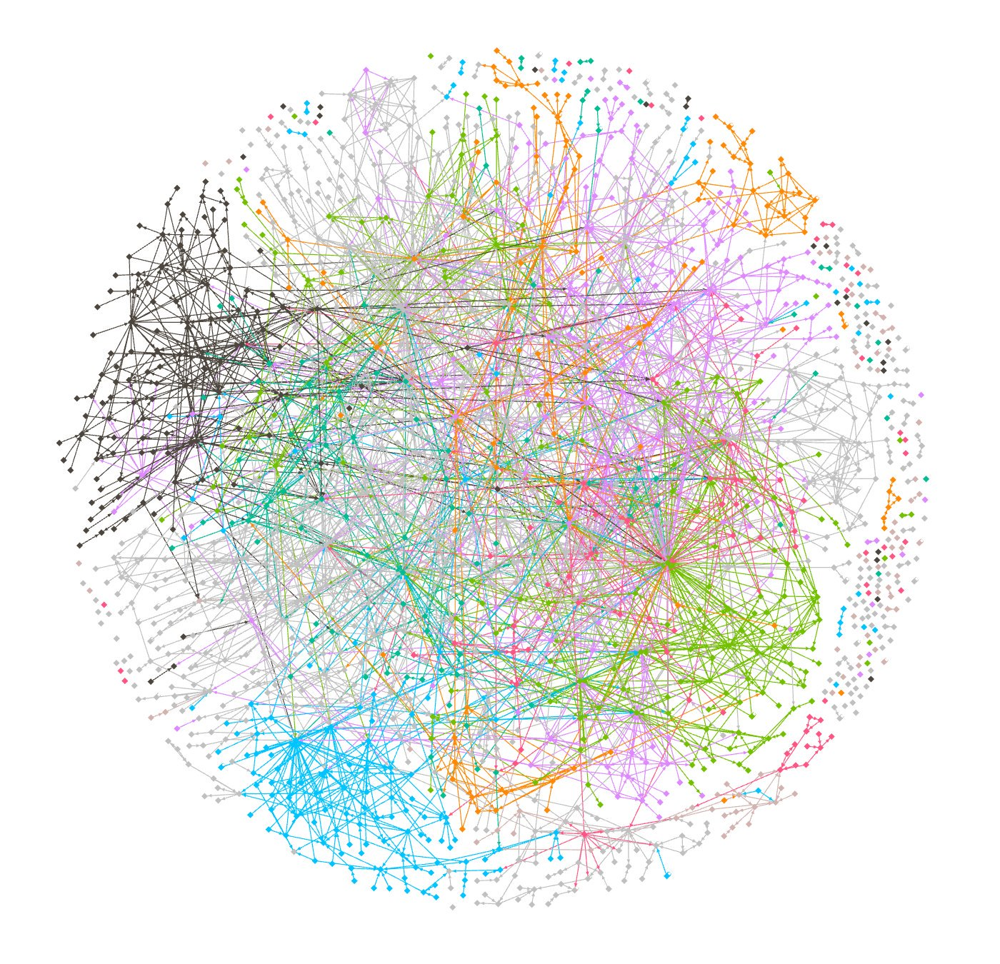
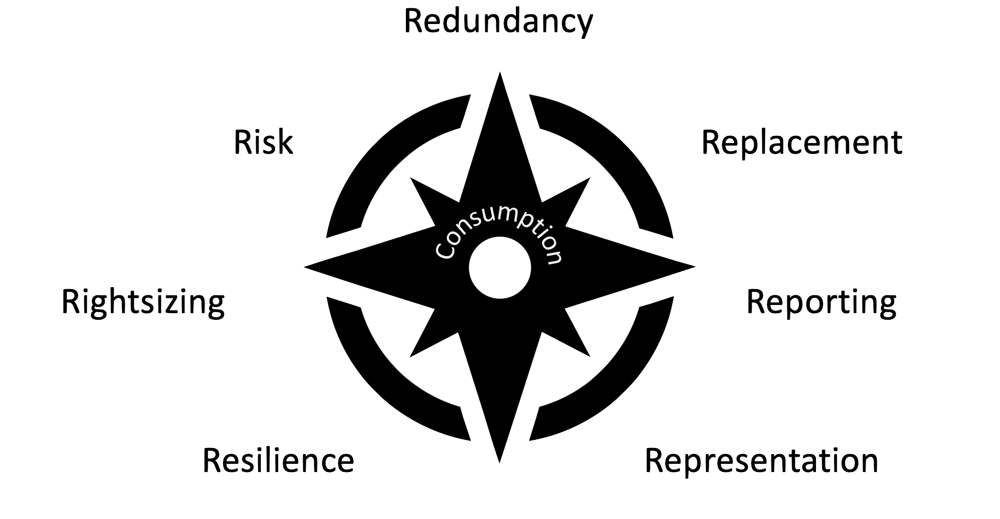
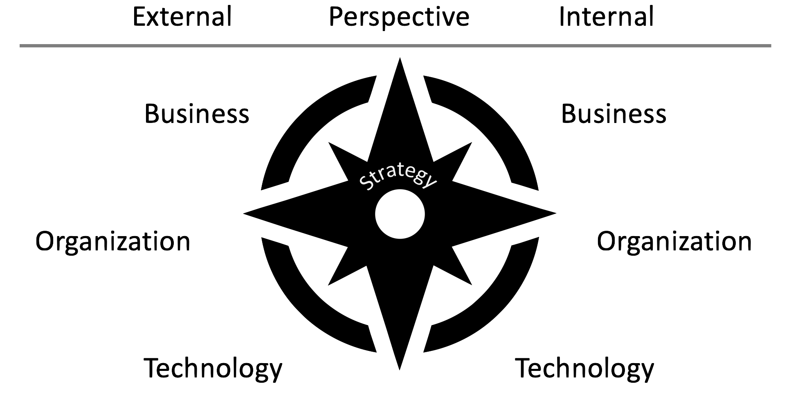
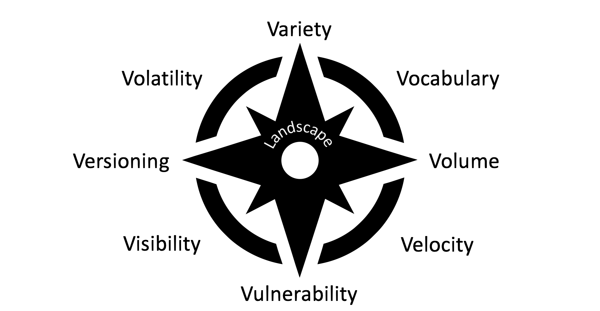

(2) Summary
Architektur im Kontext digitaler Transformation kann auf zwei Ebenen betrachtet werden:
Auf der Produkte-Ebene bestehen wiederverwendbare Bausteine, die Lösungen umsetzen.
Auf der Landschafts-Ebene geht es darum, den Gesamtnutzen über alle Produkte hinweg
zu verbessern. Produkte sollen so autonom wie möglich gemanaged werden, aber ihr Lebenszyklus
soll in die Landschaft eingebettet und von ihr unterstützt werden. Continuous Architecting
bietet eine Perspektive und Hilfestellungen, wie Architektur über diese beiden Ebenen
hinweg so praktiziert werden kann, dass das resultierende Ökosystem an Produkten eine
schnell und ständig verbesserte Grundlage für digitale Transformation bietet.
API Products
(18) API Product Lifecycle

(19) Product Pillars and Maturity
- API Products are created in the context of API landscapes
- They are influenced by the culture and constraints of the landscape
- They influence the culture and constraints of the landscape
- Product Pillars identify areas of investment during an API's lifetime
- Product Maturity describes stages of an API product's lifetime
(20) CAM Product Compass

(21) CAM Product Compass: Change Management
- Does your design include a plan how to make any changes to the API?
- Do you have an idea of what your API should and shouldn't be, so that you can more
easily decide which evolution paths you are trying to keep open?
- If your design does not plan on evolving the API itself, do you have a plan how to
operate multiple versions and how to manage the consumers of these multiple versions?
- If your design includes a plan for evolving the API itself, do you document this clearly
so that clients know what to expect?
- Does your documentation include a history of changes so that it is possible for consumers
to understand how the API evolved?
- Do you have a plan how to decommission the API, and how this will be communicated
to active consumers?
(22) CAM Product Compass: Maturity

(23) CAM Product Compass: Results

(24) API Complexity: Results

(25) Consume Responsibly
- Distributed programming is different
- Well-behaving code needs to be resilient
- Test resilience by testing in non-optimal environments
(26) CAM Consumption Compass

API Landscapes
(28) CAM Strategy Compass

(29) Guidelines: Increasing Product/Landscapes Productivity
- API product teams need guidance, autonomy, and support
- Guidance helps understanding and navigating the current landscape
- Autonomy allows choices to be made driven by product and user needs
- Support increases productivity of teams for cross-cutting concerns
- Balancing product value and product portfolio value
- Products focus on achieving
local maxima
for product value
- Landscapes focus on achieving
global maxima
across all products
(30) Guidelines: Why? What? How? Test?
- Guidance needs to be motivated, clear, actionable, and testable
Why
explains why a problem is a problem
What
explains a design to address the problem
How
explains how to implement the solution
Test
provides feedback to verify compliance
- Guidance is further qualified by when it is applicable
- Guidance evolution has stages such as experimental/production/deprecated
- Guidance applicability is decided by API maturity stage
- Governance is about how the guidelines are
enforced
/encouraged
(31) CAM Landscape Compass

(32) The Evolution of API Design Patterns
- [http://webconcepts.info/specs/IETF/RFC/7807] as a way how APIs expose error information
- Enables generic error handling but also allows additional information
- [http://webconcepts.info/specs/IETF/I-D/nottingham-json-home] as a way how APIs provide starting pages
- Enables harvesting of API start points but also allows additional information
- [http://webconcepts.info/specs/IETF/I-D/inadarei-api-health-check] as a way how APIs expose status information
- Enables landscape-level status reports but also allows additional information
(33) Web Concepts
- Web APIs are always based on shared architectural concepts
- Some [http://webconcepts.info/concepts/] matter for interaction at the Web level
- Each concept has a value space (such as [http://webconcepts.info/concepts/http-method/])
- Specifications establishing values are created by [http://webconcepts.info/specs/]
- [http://webconcepts.info/] provides a starter set of concepts and specifications
- Currently there are [http://webconcepts.info/concepts/]
- These concepts are taken from [http://webconcepts.info/specs/]
- Web concepts is designed to be usable along two major axes
- Adding or removing concepts/values to represent the
organizational Web surface
- Adding API-level usage to link APIs and the concepts they use
(34) HTTP Problems: JSON Format

(36) Specifications
"7807": {
"id": "http://webconcepts.info/specs/IETF/RFC/7807",
"title": "Problem Details for HTTP APIs",
"name": "RFC 7807",
"URI": "urn:ietf:rfc:7807",
"URL": "http://tools.ietf.org/html/rfc7807",
"abstract": "This document defines a \"problem detail\" as a way to carry machine-readable details of errors in a HTTP response, to avoid the need to invent new error response formats for HTTP APIs.",
"concepts": [{
"http://webconcepts.info/concepts/media-type/": "http://webconcepts.info/concepts/media-type/application/problem+json" }, {
"http://webconcepts.info/concepts/media-type/": "http://webconcepts.info/concepts/media-type/application/problem+xml" }]}},{
(37) Concepts
{ "value" : "application\/problem+json",
"concept" : "http:\/\/webconcepts.info\/concepts\/media-type\/",
"id" : "http:\/\/webconcepts.info\/concepts\/media-type\/application\/problem+json",
"details" :
[
{ "description" : "The canonical model for problem details is a JSON object. When serialised as a JSON document, that format is identified with the \"application\/problem+json\" media type.",
"documentation" : "http:\/\/tools.ietf.org\/html\/rfc7807#section-3",
"specification" : "http:\/\/webconcepts.info\/specs\/IETF\/RFC\/7807",
"spec-name" : "RFC 7807" } ] },